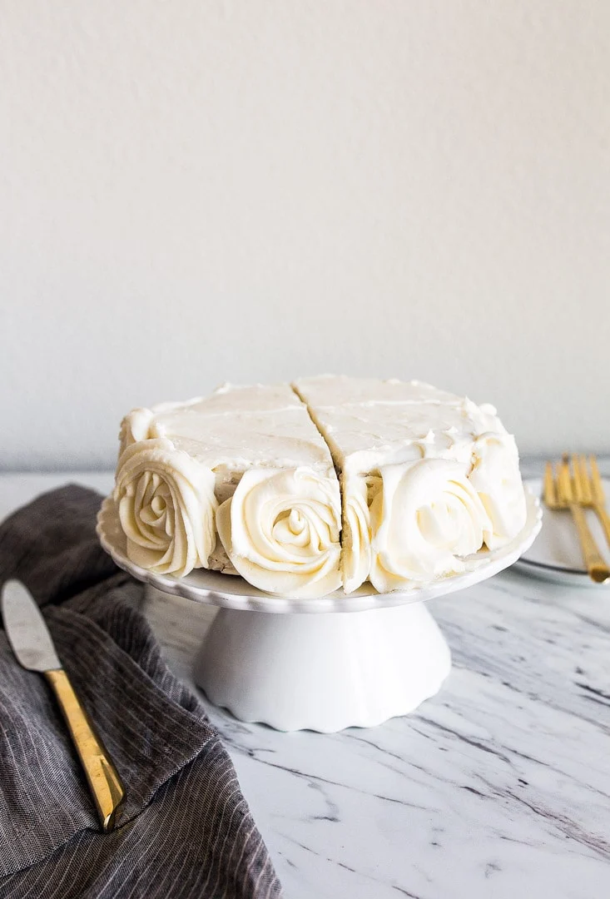

Consejos para un merengue con calidad de restaurante
Descubre los secretos para lograr un merengue perfecto, desde la elección de ingredientes hasta técnicas de batido y horneado. Aprende a crear postres deliciosos y visualmente impresionantes con nuestros consejos expertos.
